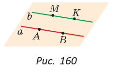
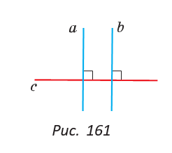
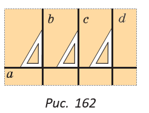
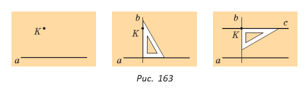

§ 15. Признаки параллельности прямых.
15.1. Две прямые, перпендикулярные третьей
Параллельность прямых — одно из основных понятий геометрии. Параллельность часто встречается в жизни. Посмотрев вокруг, можно убедиться, что мы живем в мире параллельных линий. Это края парты, столбы вдоль дороги, полоски «зебры» на пешеходном переходе. Определение. Две прямые называются параллельными, если они лежат в одной плоскости и не пересекаются. |
|  | Лучи и отрезки называются параллельными, если они лежат на параллельных прямых. Если прямые а и b параллельны, то есть а || b (рис. 160), то параллельны отрезки AB и MK, отрезок MK и прямая а, лучи AB и KM. |
|  | Вы уже знаете теорему о параллельных прямых на плоскости: «Две прямые, перпендикулярные третьей, параллельны между собой». Другими словами, если а ⊥ c, b ⊥ c, то а || b (рис. 161). Данная теорема позволяет решить две важные практические задачи. |
Первая задача заключается в проведении нескольких параллельных прямых. 
Пусть дана прямая а (рис. 162). При помощи чертежного треугольника строят прямую b, перпендикулярную прямой а. Затем сдвигают треугольник вдоль прямой а и строят другую перпендикулярную прямую с, затем — третью прямую d и т. д. Поскольку прямые b, с, d перпендикулярны одной прямой а, то из указанной теоремы следует, что b || с, с || d, b || d.
Вторая задача — проведение прямой, параллельной данной и проходящей через точку, не лежащую на данной прямой.
По рисунку 163 объясните процесс проведения прямой с, параллельной прямой a и проходящей через точку K.

Из построения следует: так как а ⊥ b и с ⊥ b, то а || с. Решение второй задачи доказывает теорему о существовании прямой, параллельной данной, которая гласит:
|
|